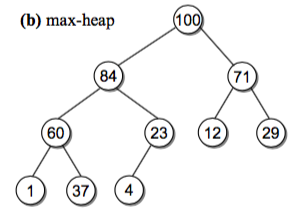

python刷题
字符串¶
测试函数
s.endswith(t) #s以字符串t结尾，区分大小写
s.startswith(t) #s以字符串t开头，区分大小写
s.isalnum() #s只包含字符串或数字
s.isalpha() #s只包含字符串
s.isdigit() #s只包含数字字符
s.isidentifier() #s是否合法标识符
s.islower() #s是否只包含小写字符
s.isnumeric() #s只包含数字
s.isprintable() #s是否只包含可打印字符
s.isspace() #s只包含空白字符
s.istitle() #s是否符合头衔大小写
s.isupper() #s是否只包含大写字母
#s in t t是否包含s
改变字符串大小写
s.capitalize() #将s[0]变成大写
s.lower() #将字母全部改成小写
s.upper() #将字母全部改成大写
s.swapcase() #交换大小写
s.title() #将字符串改成符合头衔大小写
搜索函数
s.find(t) #如果没有找到子字符串t，返回-1，否则返回t在s中的起始位置
s.rfind(t) #如果没有找到子字符串t，返回-1，否则返回t在s中的最后一个的位置
s.index(t) #如果没有找到子字符串t，返回ValueError异常，否则返回t在s中的起始位置
s.rindex(t) #如果没有找到子字符串t，返回ValueError异常，否则返回t在s中的最后一个的位置
设置格式函数
s.center(n,ch) #包含n个字符串，其中s位于中间，两边使用ch填充
s.ljust(n,ch) #包含n个字符串，其中s位于右边，左边使用ch填充
s.rjust(n,ch) #包含n个字符串，其中s位于左边，右边使用ch填充
s.format(ch1,ch2) #s中包含{0}{1}的位置被ch1、ch2填充
字符串剥除函数
s.strip(ch) #去除字符串s中开头和结尾的ch字符串
s.lstrip(ch) #去除字符串s中开头的ch字符串
s.rstrip(ch) #去除字符串s中结尾的ch字符串
字符串拆分函数
s.partition('ch') #将字符串s按照ch字符串分成三个部分，从左到右的顺序
s.rpartition('ch') #将字符串s按照ch字符串分成三个部分，从右到左的顺序
s.split('ch') #以ch为分隔符，将s进行分割，并返回分割后的列表
s.rsplit('ch') #以ch为分隔符，将s进行分割，并返回分割后的列表,从s的右端开始搜索ch
字符串替换
s.replace(old,new) #将字符串s中的old子字符串全部替换成new
s.expandtabs(n) #将字符串s中的每个制表符替换成n个空格
其他函数
'sep'.join(seq) # 以sep作为分隔符，将seq所有的元素合并成一个新的字符串
s.count('ch') #统计字符串s中ch的出现次数
s.maketrans('old','new')->t #创建一个转换表t，用于将s中的old替换成new
s.translate(t) #按照转换表t将s中的字符进行替换
List-数组¶
list.append(value) # 在列表末尾添加新的对象
list.extend(list1) # 扩展列表，在列表末尾一次性追加另一个列表中的多个值（相当于把list1的元素复制到了list）
list.pop(index) # 移出列表中的索引是index的元素，（默认最后一个元素）
list.remove(value) # 移除列表中某个值的第一个匹配项（只会移出第一个）
list.index(value) # 从列表中找出某个值第一个匹配项的索引位置
list.insert(index,value) # 将对象插入列表的第index个位置
list.sort() # 从小到大排序
list.reverse() # 反向列表中的元素
list.count(value) # 统计某个元素在列表中出现的次数
list.copy() # 复制一个副本，原值和新复制的变量互不影响
len(list)、max(list)、min(list)
数组字符串题目¶
1.大数相加
import time
L1 = "2649821731631836529481632803462831616487712734074314936141303241873417434716340124362304724324324324324323412121323164329751831"
L2 = "1232141045091731748365195814509145981509438583247509149821493213241431431319999999999999999999999999999999999999999999999999341344779"
startTime = time.time()
max_len = max(len(L1), len(L2))
# str.zfill(width) 指定字符串的长度。原字符串右对齐，前面填充0。
l1 = L1.zfill(max_len)
l2 = L2.zfill(max_len)
a1 = list(l1)
a2 = list(l2)
a3 = [0] * (max_len + 1)
for index in range(max_len - 1, -1, -1):
index_sum = a3[index + 1] + int(a1[index]) + int(a2[index])
less = index_sum - 10
a3[index + 1] = index_sum % 10
a3[index] = 1 if less >= 0 else 0
if(a3[0] == 0):
a3.pop(0)
a33 = [str(i) for i in a3]
print(''.join(a33))
print('耗时{0}ms'.format(time.time() - startTime))
2.寻找数组的中心索引
class Solution:
def pivotIndex(self, nums: List[int]) -> int:
total_sum = sum(nums)
left_sums = 0
for index in range(0,len(nums)):
if index==0:
left_sums = 0
else:
left_sums += nums[index-1]
if (left_sums*2+nums[index])==total_sum:
return index
return -1
3.至少是其他数字两倍的最大数
class Solution:
def dominantIndex(self, nums: List[int]) -> int:
max_num = max(nums)
result = nums.index(max_num)
nums.remove(max_num)
for i in range(len(nums)):
if nums[i]*2>max_num:
return -1
return result
4.加一
class Solution:
def plusOne(self, digits: List[int]) -> List[int]:
if len(digits) == 0:
digits = [1]
elif digits[-1] == 9:
# 倘若每一步都是重复的操作，建议使用递归
digits = self.plusOne(digits[:-1])
digits.append(0)
else:
digits[-1] += 1
return digits
链表¶
单链表
class Node(object):
def __init__(self,value=None,next=None):
self.value,self.next = value,next
class LinkedList(object):
def __init__(self,maxsize=None):
self.maxsize = maxsize
self.root = Node()
self.taillNode = None
self.length = 0
def __len__(self):
return self.length
def append(self,value):
if len(self)>self.maxsize and self.maxsize is not None:
raise Exception("Full")
node = Node(value=value)
if self.taillNode is None:
self.root.next = node
else:
self.taillNode.next = node
self.taillNode = node
self.length += 1
def appendLeft(self,value):
if len(self)>self.maxsize and self.maxsize is not None:
raise Exception("Full")
node = Node(value=value)
tempNode = self.root.next
self.root.next = node
node.next = tempNode
self.length += 1
def iterNode(self):
tempNode = self.root.next
while tempNode is not self.taillNode:
yield tempNode
tempNode = tempNode.next
yield tempNode # 这个返回的是tailNode
def __iter__(self):
for node in self.iterNode():
yield node.value
def find(self,value):
for index,node in enumerate(self.iterNode()):
if node.value==value:
return index
return -1
def remove(self,value):
preNode = self.root
curNode = self.root.next
for curNode in self.iterNode():
if curNode.value == value:
preNode.next = curNode.next
if curNode is self.taillNode:
self.taillNode = preNode
del curNode
self.length -= 1
return 1
else:
preNode = curNode
return -1
def popLeft(self):
if self.root.next is None:
raise Exception("This LinkedList is empty!")
tempNode = self.root.next
self.root.next = tempNode.next
resultValue = tempNode.value
del tempNode
self.length -= 1
return resultValue
def clear(self):
for node in self.iterNode():
del node
self.root.next = None
self.length = 0
循环双链表
class Node(object):
def __init__(self,value=None,prev=None,next=None):
self.value,self.prev,self.next = value,prev,next
class CircleDoubleLinkedList(object):
def __init__(self,maxsize=None):
self.maxsize = maxsize
node = Node()
node.prev,node.next = node,node
self.root = node
self.length = 0
def __len__(self):
return self.length
def headNone(self):
return self.root.next
def tailNode(self):
return self.root.prev
def append(self,value):
if self.maxsize is not None and len(self) > self.maxsize:
raise Exception("Full")
node = Node(value)
tailNode = self.tailNode()
tailNode.next = node
node.prev = tailNode
node.next = self.root
self.root.prev = node
self.length += 1
def appendLeft(self,value):
if self.maxsize is not None and len(self) > self.maxsize:
raise Exception("Full")
node = Node(value)
if self.root.next is self.root: # empty
node.next = self.root
self.root.prev = node
self.root.next = node
node.prev = self.root
else:
headNode = self.root.next
node.prev = self.root
headNode.next = node
node.next = headNode
headNode.prev = node
self.length += 1
def remove(self,node):
if node is self.root:
raise Exception("This node is not deleted!")
else:
node.prev = node.next
node.next.prev = node.prev
del node
self.length -= 1
return node
def iterNode(self):
if self.root.next is self.root:
raise Exception("Empty")
tempNode = self.root.next
while tempNode.next is not self.root:
yield tempNode
tempNode = tempNode.next
yield tempNode
def __iter__(self):
for node in self.iterNode():
yield node.value
def iterNodeReverse(self):
if self.root.prev is self.root:
return
tempNode = self.root.prev
while tempNode.prev is not self.root:
yield tempNode
tempNode = tempNode.prev
yield tempNode
快慢指针
快慢指针中的快慢指的是移动的步长，即每次向前移动速度的快慢。例如可以让快指针每次沿链表向前移动n(一般n=2)，慢指针每次向前移动1次。
class LinkNode:
def __init__(self,val):
self.val,self.next = val,None
# 1、判断单链表是否是循环链表,类似围着操场跑步，用快慢指针，跑的快的总会赶上跑的慢的
class JudgeCircle(object):
def hasCycle(self,head):
fast,low = head,head
while (fast is not None) and (low is not None):
fast = fast.next.next
low = low.next
if low==fast:
return True
return False
# 2、寻找有序链表的中位数:快指针的移动速度是慢指针移动速度的2倍，因此当快指针到达链表尾时，慢指针到达中点。
# 注意:快指针到达尾部分奇偶，例如fast.next==None,fast.next.next==None
class FindMiddle(object):
def findMid(self,head):
fast,low = head,head
while (fast is not None) and (low is not None):
if fast.next is None:
return low.val
elif fast.next.next is None:
# 链表结点个数是偶数，这时可以根据“规则”返回上中位数或下中位数或（上中位数+下中位数）的一半。
return (low.val+low.next.val)/2
else:
fast = fast.next.next
low = low.next
# 3、删除倒数第n个节点,，并且返回链表的头结点:使用前后指针。前指针先走n步，然后前、后指针同时走，当前指针走到节点尾时，后指针刚好走到要删除的节点。
class Solution:
def removeNthFromEnd(self, head: ListNode, n: int) -> ListNode:
tempNode = head
fast,low = head,head
for i in range(n):
if fast.next:
fast = fast.next
else:
return head.next
while fast.next:
fast = fast.next
low = low.next
low.next = low.next.next
return tempNode
# 4、不止链表中可以使用，list中也可以，只不过是用索引，结束条件是<len(nums),删除排序数组中的重复项,返回移除后数组的新长度.例如:nums = [0,0,1,1,1,2,2,3,3,4]---> [0,1,2,3,4]
class Solution:
def removeDuplicates(self, nums: List[int]) -> int:
low,fast = 0,1
while fast<len(nums):
if nums[low]==nums[fast]:
nums.pop(fast)
else:
low += 1
fast += 1
return len(nums)
**LRU缓存机制：**首先淘汰**最长时间未被使用**的
# 如何优化斐波那契算法:下面是使用递归的，递归意味着有很多重复的
def fib(n):
if n<=2:
return 1
else:
return fib(n-1) + fib(n-2)
普通优化:添加装饰器，把重复的部分记录下来直接拿来用，无需做第二次计算
import time
from functools import wraps # 装饰器时尽量加上
# 原因:https://www.cnblogs.com/wangtaobiu/p/10614451.html
def wrapper(func):
data = {} # 用于收集已经计算过的部分
@wraps(func) # 加上wraps装饰器,保证原函数在执行时不会发生异常
def collect_repeat(n):
if n in data:
return data[n]
else:
res = func(n)
data[n] = res
return res
return collect_repeat
# 不加装饰器耗时:5.364307165145874ms
# 加了装饰器耗时:0.0002818107604980469ms
@wrapper
def fib(n):
if n<=2:
return 1
else:
return fib(n-1) + fib(n-2)
if __name__ == "__main__":
s = time.time()
for i in range(1,35):
print(fib(i))
total_time = time.time() - s
print(f"total time:{total_time}ms")
内存有限怎么办？
问题来了，假如空间有限怎么办，我们不可能一直向缓存塞东西，当缓存达到一定个数之后，我们需要一种策略踢出一些元素，用来给新的元素腾出空间。
一般缓存失效策略有
- LRU(Least-Recently-Used): 替换掉最近请求最少的对象，实际中使用最广。cpu缓存淘汰和虚拟内存效果好，web应用欠佳
- LFU(Least-Frequently-Used): 缓存污染问题(一个先前流行的缓存对象会在缓存中驻留很长时间)
- First in First out(FIFO)
- Random Cache: 随机选一个删除
LRU 是常用的一个，要想实现一个 LRU，我们需要一种方式能够记录访问的顺序，并且每次访问之后我们要把最新使用到的元素放到最后（表示最新访问）。当容量满了以后，我们踢出最早访问的元素。假如用一个链表来表示的话：[1] -> [2] -> [3]。假设最后边是最后访问的，当访问到一个元素以后，我们把它放到最后。当容量满了，我们踢出第一个元素就行了。
一开始的想法可能是用一个链表来记录访问顺序，但是单链表有个问题就是如果访问了中间一个元素，我们需要拿掉它并且放到链表尾部。而单链表无法在O(1)的时间内删除一个节点（必须要先搜索到它）。
但是双端链表可以，因为一个节点记录了它的前后节点，只需要把要删除的节点的前后节点链接起来就行了。
- 还有个问题是如何把删除后的节点放到链表尾部，如果是循环双端链表就可以啦，我们有个 root 节点链接了首位节点，只需要让 root 的前一个指向这个被删除节点，然后让之前的最后一个节点也指向它就行了。使用了循环双端链表之后，我们的操作就都是 O(1) 的了。
这也就是使用一个 dict 和一个 循环双端链表 实现LRU 的思路。
不过一般我们使用内置的 OrderedDict(原理和这个类似)就好了，要实现一个循环双端链表是一个不简单的事情，因为链表操作很容易出错。
补充：其实 lru 有个缺点就是额外的链表比较占用空间，如果你感兴趣的话可以看看 redis 如何实现的 lru 算法。
补充2:OrderedDict
# 使用dict时，Key是无序的。在对dict做迭代时，我们无法确定Key的顺序。如果要保持Key的顺序，可以用OrderedDict，Key会按照插入的顺序排列，而不是Key本身排序。有序实际上是由一个双向链表实现的。
OrderedDict.move_to_end(key,last=True)
>>> d = OrderedDict.fromkeys('abcde')
>>> d.move_to_end('b')
>>> ''.join(d.keys())
'acdeb'
>>> d.move_to_end('b', last=False)
>>> ''.join(d.keys())
'bacde'
OrderedDict.popitem(last=True) # 默认从删除最后一个(key,value),并且返回删除的(key,value),last=False表示从首位开始删除
LRU缓存代码
# 总共耗时:0.0007581710815429688ms,虽然时间略长,但是内存节约下来了
import time
from collections import OrderedDict
class LRUCache:
def __init__(self, capacity=128):
self.capacity = capacity
# 借助OrderedDict 我们可以快速实现一个LRUCache，OrderedDict内部其实也是使用循环双端链表实现的
self.od = OrderedDict()
def get(self, key, default=None):
val = self.od.get(key, default) # 如果没有返回 default，保持 dict 语义
if val is not None:
self.od.move_to_end(key) # 每次访问就把key 放到最后表示最新访问
return val
def add_or_update(self, key, value):
if key in self.od: # update
self.od[key] = value
self.od.move_to_end(key)
else: # insert
self.od[key] = value
if len(self.od) > self.capacity: # full
self.od.popitem(last=False)
def __call__(self, func):
"""
一个简单的 LRU 实现。有一些问题需要思考下：
- 这里为了简化默认参数只有一个数字 n，假如可以传入多个参数，如何确定缓存的key 呢？
- 这里实现没有考虑线程安全的问题，要如何才能实现线程安全的 LRU 呢？当然如果不是多线程环境下使用是不需要考虑的
- 假如这里没有用内置的 dict，你能使用 redis 来实现这个 LRU 吗，如果使用了 redis，我们可以存储更多数据到服务器。而使用字典实际上是缓存了Python进程里(localCache)。
- 这里只是实现了 lru 策略，你能同时实现一个超时 timeout 参数吗？比如像是memcache 实现的 lazy expiration 策略
- LRU有个缺点就是，对于周期性的数据访问会导致命中率迅速下降，有一种优化是 LRU-K，访问了次数达到 k 次才会将数据放入缓存
"""
def _(n):
if n in self.od:
return self.get(n)
else:
val = func(n)
self.add_or_update(n, val)
return val
return _
@LRUCache(10)
def fib(n):
if n<=2:
return 1
else:
return fib(n-1) + fib(n-2)
if __name__ == "__main__":
s = time.time()
for i in range(1,35):
print(fib(i))
total_time = time.time() - s
print(f"total time:{total_time}ms")
双端队列(具有队列和栈的性质)¶
from collections import deque
d = collections.deque([])
d.append('a') # 在最右边添加一个元素，此时 d=deque('a')
d.appendleft('b') # 在最左边添加一个元素，此时 d=deque(['b', 'a'])
d.index('a',start,end) #查找指定区间的索引
d.insert(index,val) # 再index之前插入val元素
d.extend(['c','d']) # 在最右边添加所有元素，此时 d=deque(['b', 'a', 'c', 'd'])
d.extendleft(['e','f']) # 在最左边添加所有元素，此时 d=deque(['f', 'e', 'b', 'a', 'c', 'd'])
d.pop() # 将最右边的元素取出，返回 'd'，此时 d=deque(['f', 'e', 'b', 'a', 'c'])
d.popleft() # 将最左边的元素取出，返回 'f'，此时 d=deque(['e', 'b', 'a', 'c'])
d.rotate(-2) # 把左边n个元素放右边（+则把右边元素放左边），此时 d=deque(['a', 'c', 'e', 'b'])
d.count('a') # 队列中'a'的个数，返回 1
d.remove('c') # 从队列中将'c'删除，此时 d=deque(['a', 'e', 'b'])
d.reverse() # 将队列倒序，此时 d=deque(['b', 'e', 'a'])
d.copy() # 浅拷贝
d.clear() # 将队列清空，此时 d=deque([])
使用deque的旋转解决约瑟夫环问题
""" 约瑟夫算法
据说著名犹太历史学家 Josephus 有过以下的故事：
在罗马人占领桥塔帕特后，39个犹太人与 Josephus 及他的朋友躲到一个洞中，
39个犹太人决定宁愿死也不要被敌人抓到，于是决定了一个自杀方式，41个人排成一个圆圈，
由第1个人开始报数，每报数到第3人该人就必须自杀，然后再由下一个重新报数，
直到所有人都自杀身亡为止。然而 Josephus 和他的朋友并不想自杀，
问他俩安排的哪两个位置可以逃过这场死亡游戏？
"""
import collections
def ysf(totalNum, mod):
d = collections.deque(range(1, totalNum+1)) # 将每个人依次编号，放入到队列中
while d:
d.rotate(-mod) # 队列向左旋转b步
print(d.pop()) # 将最右边的删除，即自杀的人
if __name__ == '__main__':
ysf(41,3) # 输出的是自杀的顺序。最后两个是16和31，说明这两个位置可以保证他俩的安全。
哈希表(散列表)¶
有没有一种方法可以快速定位和删除元素吗？给每个元素一种『逻辑下标』，然后直接找到它，哈希表就是这种实现。它通过一个哈希函数来计算一个元素应该放在数组哪个位置，当然对于一个特定的元素，哈希函数每次计算的下标必须要一样才可以，而且范围不能超过给定的数组长度。
举例子
# 哈希函数：h(key) = key % M,这样就保证了每个元素的下标固定，但是有弊端:下标发生冲突怎么办呢？
M = 13
h(765) = 765 % M = 11
h(431) = 431 % M = 2
h(96) = 96 % M = 5
h(142) = 142 % M = 12
h(579) = 579 % M = 7
h(226) = 226 % M = 5
h(903) = 903 % M = 6
h(388) = 388 % M = 11

- 但是如果哈希函数选不好的话，可能就导致冲突太多一个链变得太长，这样查找就不再是 O(1) 的了
开放寻址法
它的基本思想是当一个槽被占用的时候，采用一种方式来寻找下一个可用的槽。 （这里槽指的是数组中的一个位置），根据找下一个槽的方式不同，分为:
# 本次选用 二次探查函数，代码举例如下
inserted_index_set = set()
M = 13
def h(key, M=13):
return key % M
to_insert = [765, 431, 96, 142, 579, 226, 903, 388]
for number in to_insert:
index = h(number)
first_index = index # 倘若冲突了，使用first_index参与计算
i = 1
while index in inserted_index_set: # 如果计算发现已经占用，继续计算得到下一个可用槽的位置
print('\th({number}) = {number} % M = {index} collision'.format(number=number, index=index))
index = (first_index + i*i) % M # 根据二次方探查的公式重新计算下一个需要插入的位置
i += 1
else:
print('h({number}) = {number} % M = {index}'.format(number=number, index=index))
inserted_index_set.add(index)
装载因子
如果继续往我们的哈希表里塞东西会发生什么？空间不够用。这里我们定义一个负载因子的概念(load factor)，其实很简单，就是已经使用的槽数比哈希表大小。 比如我们上边的例子插入了 8 个元素，哈希表总大小是 13， 它的 load factor 就是 8/13≈0.62。当我们继续往哈希表插入数据的时候，很快就不够用了。 通常当负载因子开始超过 0.8 的时候，就要新开辟空间并且重新进行散列了。重哈希规则:cpython中规则:Currently set to used*3
代码阐述
# -*- coding: utf-8 -*-
# 从数组和列表章复制的代码
class Array(object):
def __init__(self, size=32, init=None):
self._size = size
self._items = [init] * size
def __getitem__(self, index):
return self._items[index]
def __setitem__(self, index, value):
self._items[index] = value
def __len__(self):
return self._size
def clear(self, value=None):
for i in range(len(self._items)):
self._items[i] = value
def __iter__(self):
for item in self._items:
yield item
class Slot(object):
"""定义一个 hash 表数组的槽(slot 这里指的就是数组的一个位置)
hash table 就是一个 数组，每个数组的元素（也叫slot槽）是一个对象，对象包含两个属性 key 和 value。
注意，一个槽有三种状态，看你能否想明白。相比链接法解决冲突，探查法删除一个 key 的操作稍微复杂。
1.从未使用 HashMap.UNUSED。此槽没有被使用和冲突过，查找时只要找到 UNUSED 就不用再继续探查了
2.使用过但是 remove 了，此时是 HashMap.EMPTY，该探查点后边的元素仍然可能是有key的，需要继续查找
3.槽正在使用 Slot 节点
"""
def __init__(self, key, value):
self.key, self.value = key, value
class HashTable(object):
UNUSED = None # 没被使用过
EMPTY = Slot(None, None) # 使用却被删除过
def __init__(self):
self._table = Array(8, init=HashTable.UNUSED) # 保持 2*i 次方
self.length = 0
@property # 装载因子
def _load_factor(self):
# load_factor 超过 0.8 重新分配，自身数值长度/Array总长度
return self.length / float(len(self._table))
def __len__(self):
return self.length
# 哈希函数
def _hash(self, key):
return abs(hash(key)) % len(self._table)
def _find_key(self, key):
"""
解释一个 slot 为 UNUSED 和 EMPTY 的区别
因为使用的是二次探查的方式，假如有两个元素 A，B 冲突了，首先A hash 得到是 slot 下标5，A 放到了第5个槽，之后插入 B 因为冲突了，所以继续根据二次探查方式放到了 slot8。
然后删除 A，槽 5 被置为 EMPTY。然后我去查找 B，第一次 hash 得到的是 槽5，但是这个时候我还是需要第二次计算 hash 才能找到 B。但是如果槽是 UNUSED 我就不用继续找了，
我认为 B 就是不存在的元素。这个就是 UNUSED 和 EMPTY 的区别。
"""
origin_index = index = self._hash(key) # origin_index 判断是否又走到了起点，如果查找一圈了都找不到则无此元素
_len = len(self._table)
while self._table[index] is not HashTable.UNUSED:
if self._table[index] is HashTable.EMPTY: # 注意如果是 EMPTY，继续寻找下一个槽
index = (index * 5 + 1) % _len # 本次使用的二次探查法使用规则
if index == origin_index:
break
continue
if self._table[index].key == key: # 找到了key
return index
else:
index = (index * 5 + 1) % _len # 没有找到继续找下一个位置
if index == origin_index:
break
return None
def _find_slot_for_insert(self, key):
index = self._hash(key)
_len = len(self._table)
while not self._slot_can_insert(index): # 直到找到一个可以用的槽
index = (index * 5 + 1) % _len
return index
def _slot_can_insert(self, index):
return (self._table[index] is HashTable.EMPTY or self._table[index] is HashTable.UNUSED)
def __contains__(self, key): # in operator，实现之后可以使用 in 操作符判断
index = self._find_key(key)
return index is not None
def add(self, key, value):
if key in self: # update
index = self._find_key(key)
self._table[index].value = value
return False
else:
index = self._find_slot_for_insert(key)
self._table[index] = Slot(key, value)
self.length += 1
if self._load_factor >= 0.8:
self._rehash()
return True
def _rehash(self):
old_table = self._table
newsize = len(self._table) * 2
self._table = Array(newsize, HashTable.UNUSED)
self.length = 0
for slot in old_table:
if slot is not HashTable.UNUSED and slot is not HashTable.EMPTY:
index = self._find_slot_for_insert(slot.key)
self._table[index] = slot
self.length += 1
def get(self, key, default=None):
index = self._find_key(key)
if index is None:
return default
else:
return self._table[index].value
def remove(self, key):
index = self._find_key(key)
if index is None:
raise KeyError()
value = self._table[index].value
self.length -= 1
self._table[index] = HashTable.EMPTY
return value
def __iter__(self):
for slot in self._table:
if slot not in (HashTable.EMPTY, HashTable.UNUSED):
yield slot.key
def test_hash_table():
h = HashTable()
h.add('a', 0)
h.add('b', 1)
h.add('c', 2)
assert len(h) == 3
assert h.get('a') == 0
assert h.get('b') == 1
assert h.get('hehe') is None
h.remove('a')
assert h.get('a') is None
assert sorted(list(h)) == ['b', 'c']
n = 50
for i in range(n):
h.add(i, i)
for i in range(n):
assert h.get(i) == i
if __name__ == '__main__':
print(
'beg',
test_hash_table(),
'end',
)
dict + set¶
dict
D.clear() #移除D中的所有项
D.copy() #返回D的副本
D.fromkeys(seq[,val]) #返回从seq中获得的键和被设置为val的值的字典。可做类方法调用
D.get(key[,default]) #如果D[key]存在，将其返回；否则返回给定的默认值None
D.has_key(key) #检查D是否有给定键key
D.items() #返回表示D项的(键，值)对列表
D.iteritems() #从D.items()返回的(键，值)对中返回一个可迭代的对象
D.iterkeys() #从D的键中返回一个可迭代对象
D.itervalues() #从D的值中返回一个可迭代对象
D.keys() #返回D键的列表
D.pop(key[,d]) #移除并且返回对应给定键key或给定的默认值D的值
D.popitem() #从D中移除任意一项，并将其作为(键，值)对返回
D.setdefault(key[,default]) #如果D[key]存在则将其返回；否则返回默认值None
D.update(other) #将other中的每一项加入到D中。
D.values() #返回D中值的列表
set
# 特点：一个无序不重复元素集
# 构造
set() #空集合定义
Set1 = {"1", "2"}
set2 = set(list1)
Set3 =set(str) #例如：set('spam') ==set(['a', 'p', 's', 'm'])=={'a', 'p', 's', 'm'} str-->字符list-->set
t=s #t为集合s的一个引用
t=s.copy() #t为集合s的一个浅复制
# 增
t.add(x) # 添加一项
s.update(t) # 在s中添加多项
# 删
s.remove(x) #删除集合中的元素 x,返回集合 , 如果不存在则引发 KeyError
s.discard(x) #删除集合中的元素 x,返回集合，如果不存在返回集合本身
s.pop() #删除集合中的任一不确定的元素, 返回集合，如果为空则引发 KeyError
s.clear() #清空集合
# 查
len(s) #set 的长度
hash(s) #返回 s 的 hash 值
# 逻辑运算
a = t | s # t 和 s的并集 s.union(t)
b = t & s # t 和 s的交集 s.intersection(t) )
c = t – s # 求差集（项在t中，但不在s中） s.difference(t)
d = t ^ s # 对称差集（项在t或s中，但不会同时出现在二者中） s.symmetric_difference(t)
s|=t # 将t添加到s中 s.update(t)
s <= t #s是t的子集 返回bool s.issubset(t)
s >= t #s是t的父集 返回bool s.issuperset(t)
s==t #s与t互为子集
s!=t #集合s与t不相等
x in s # x 在集合 s 中 返回bool
x not in s # x 不在集合 s 中 返回bool
递归¶
- 递归必须包含一个基本的出口(base case)，否则就会无限递归，最终导致**栈溢出**。
- 递归必须包含一个可以分解的问题(recursive case)。
- 递归必须必须要向着递归出口靠近(toward the base case)。
def fact(n):
if n==0:
return 1
else:
return n*fact(n-1)
打印十个数组理解递归
# 正序打印
def print_num_recursive(n):
if n > 0:
print_num_recursive(n-1)
print(n)
# 倒序打印
def print_num_recursive_revserve(n):
if n > 0:
print(n)
print_num_recursive_revserve(n-1) # 尾递归:就是递归调用放在了函数的最后
# 尾递归作用:
# 普通的递归, 每一级递归都产生了新的局部变量, 必须创建新的调用栈, 随着递归深度的增加, 创建的栈越来越多, 造成爆栈。虽然尾递归调用也会创建新的栈, 但是我们可以优化使得尾递归的每一级调用共用一个栈!, 如此便可解决爆栈和递归深度限制的问题! 不幸的是 python 默认不支持尾递归优化（见延伸阅读），不过一般尾递归我们可以用一个迭代来优化它。
汉诺塔问题
'''递归方法:
把上边的 n-1 个盘子从 S 移动到 I，借助 D 杆
把最底下的盘子从 S 移动到 D
把 n-1 个盘子从 I 移动到 D，借助 S
'''
def hanoi_move(n, source, dest, intermediate):
if n >= 1: # 递归出口，只剩一个盘子
hanoi_move(n-1, source, intermediate, dest)
print("Move %s -> %s" % (source, dest))
hanoi_move(n-1, intermediate, dest, source)
hanoi_move(3, 'A', 'C', 'B')
# 输出，建议你手动模拟下。三个盘子 A(Source), B(intermediate), C(Destination)
"""
Move A -> C
Move A -> B
Move C -> B
Move A -> C
Move B -> A
Move B -> C
Move A -> C
"""
查找+排序¶
二分查找
def binary_search(sorted_array, val):
if not sorted_array:
return -1
beg = 0
end = len(sorted_array) - 1
while beg <= end:
mid = int((beg + end) / 2) # beg + (end-beg)/2， 为了屏蔽 python 2/3 差异我用了强转
if sorted_array[mid] == val:
return mid
elif sorted_array[mid] > val:
end = mid - 1
else:
beg = mid + 1
return -1
def test_binary_search():
a = list(range(10))
# 正常值
assert binary_search(a, 1) == 1
assert binary_search(a, -1) == -1
# 异常值
assert binary_search(None, 1) == -1
# 边界值
assert binary_search(a, 0) == 0
bisect(二分模块)
# 这个模块的输入是排序的，默认都是inplace=True
import bisect
data = [2,4,9,7]
bisect.insort(data,3) # 插入但不改变现有排序 data->[2,3,4,9,7]
bisect.bisect(data,1) # 0 查找该数值将会插入的位置并返回，而不会插入。data->[2,3,4,9,7]
# 下面两个函数用入处理将会插入重复数值的情况，返回将会插入的位置
bisect.bisect_left(data,4) # 2 [2,3,4,4,9,7]
bisect.bisect_right(data,4)# 3 [2,3,4,4,9,7]
基本排序(简单但耗时:冒泡/选择/插入)
冒泡排序(O(N^2))
'''
对一个数组进行 n-1 轮迭代，每次比较相邻两个元素， 如果相邻的元素前者大于后者，就交换它们。因为直接在元素上操作而不是返回新的数组，所以是一个 inplace 的操作。 这里冒泡的意思其实就是每一轮冒泡一个最大的元素就会通过不断比较和交换相邻元素使它转移到最右边。
'''
import random
def bubble_sort(seq): # O(n^2), n(n-1)/2 = 1/2(n^2 + n)
n = len(seq)
for i in range(n-1):
print(seq) # 我打印出来让你看清楚每一轮最高、次高、次次高...的小朋友会冒泡到右边
for j in range(n-1-i): # 这里之所以 n-1 还需要 减去 i 是因为每一轮冒泡最大的元素都会冒泡到最后，无需再比较
if seq[j] > seq[j+1]:
seq[j], seq[j+1] = seq[j+1], seq[j]
print(seq)
def test_bubble_sort():
seq = list(range(10)) # 注意 python3 返回迭代器，所以我都用 list 强转了，python2 range 返回的就是 list
random.shuffle(seq) # shuffle inplace 操作，打乱数组
bubble_sort(seq)
assert seq == sorted(seq) # 注意呦，内置的 sorted 就不是 inplace 的，它返回一个新的数组，不影响传入的参数
""" 我打印出来让你看到每次从最高到次高的小盆友就这么排好序了，因为是随机数，你第一个没有排序的数组应该和我的不一样
[3, 4, 5, 0, 9, 1, 7, 8, 6, 2]
[3, 4, 0, 5, 1, 7, 8, 6, 2, 9]
[3, 0, 4, 1, 5, 7, 6, 2, 8, 9]
[0, 3, 1, 4, 5, 6, 2, 7, 8, 9]
[0, 1, 3, 4, 5, 2, 6, 7, 8, 9]
[0, 1, 3, 4, 2, 5, 6, 7, 8, 9]
[0, 1, 3, 2, 4, 5, 6, 7, 8, 9]
[0, 1, 2, 3, 4, 5, 6, 7, 8, 9]
[0, 1, 2, 3, 4, 5, 6, 7, 8, 9]
[0, 1, 2, 3, 4, 5, 6, 7, 8, 9]
"""
选择排序(O(N^2))
'''
每次我们找到最小的元素插入迭代的起始位置，这样每个位置从它自己的位置开始它就是最小的了，一圈下来数组就有序了。 选择可以理解为 一个 0 到 n-1 的迭代，每次向后查找选择一个最小的元素。
'''
def select_sort(seq):
n = len(seq)
for i in range(n-1):
min_idx = i # 我们假设当前下标的元素是最小的
for j in range(i+1, n): # 从 i 的后边开始找到最小的元素，得到它的下标
if seq[j] < seq[min_idx]:
min_idx = j # 一个 j 循环下来之后就找到了最小的元素它的下标
if min_idx != i: # swap
seq[i], seq[min_idx] = seq[min_idx], seq[i]
def test_select_sort():
seq = list(range(10))
random.shuffle(seq)
select_sort(seq)
assert seq == sorted(seq)
"""
[4, 7, 5, 3, 6, 0, 2, 9, 8, 1]
[0, 7, 5, 3, 6, 4, 2, 9, 8, 1]
[0, 1, 5, 3, 6, 4, 2, 9, 8, 7]
[0, 1, 2, 3, 6, 4, 5, 9, 8, 7]
[0, 1, 2, 3, 6, 4, 5, 9, 8, 7]
[0, 1, 2, 3, 4, 6, 5, 9, 8, 7]
[0, 1, 2, 3, 4, 5, 6, 9, 8, 7]
[0, 1, 2, 3, 4, 5, 6, 9, 8, 7]
[0, 1, 2, 3, 4, 5, 6, 7, 8, 9]
[0, 1, 2, 3, 4, 5, 6, 7, 8, 9]
"""
插入排序(O(N^2))
'''
每次挑选下一个元素插入已经排序的数组中,初始时已排序数组只有一个元素:
想象你手里有一些扑克牌，它们顺序是散乱的，现在需要你把它们整理成有序的，你会怎么做呢？ 首先拿最顶上的一张，然后拿第二张，第二张点数大，你就把第二张放在第一张的下边，否则放在第一张上边。 当你拿第三张的时候，你同样会找到适合它大小的位置插入进去。
'''
def insertion_sort(seq):
""" 每次挑选下一个元素插入已经排序的数组中,初始时已排序数组只有一个元素"""
n = len(seq)
print(seq)
for i in range(1, n):
value = seq[i] # 保存当前位置的值，因为转移的过程中它的位置可能被覆盖
# 找到这个值的合适位置，使得前边的数组有序 [0,i] 有序
pos = i
while pos > 0 and value < seq[pos-1]:
seq[pos] = seq[pos-1] # 如果前边的元素比它大，就让它一直前移
pos -= 1
seq[pos] = value # 找到了合适的位置赋值就好
print(seq)
""" 不断把新元素放到已经有序的数组中
[1, 7, 3, 0, 9, 4, 8, 2, 6, 5]
[1, 7, 3, 0, 9, 4, 8, 2, 6, 5]
[1, 3, 7, 0, 9, 4, 8, 2, 6, 5]
[0, 1, 3, 7, 9, 4, 8, 2, 6, 5]
[0, 1, 3, 7, 9, 4, 8, 2, 6, 5]
[0, 1, 3, 4, 7, 9, 8, 2, 6, 5]
[0, 1, 3, 4, 7, 8, 9, 2, 6, 5]
[0, 1, 2, 3, 4, 7, 8, 9, 6, 5]
[0, 1, 2, 3, 4, 6, 7, 8, 9, 5]
[0, 1, 2, 3, 4, 5, 6, 7, 8, 9]
"""
高级排序算法(归并排序/快速排序)
归并排序(分治思路:O(n*log2n))
- 分解：将待排序的 n 个元素分成各包含 n/2 个元素的子序列
- 解决：使用归并排序递归排序两个子序列
- 合并：合并两个已经排序的子序列以产生已排序的答案

# 归并排序使用递归实现
# -*- coding: utf-8 -*-
def merge_sort(seq):
if len(seq) <= 1: # 只有一个元素是递归出口
return seq
else:
# 前半部分分开
mid = int(len(seq)/2)
left_half = merge_sort(seq[:mid])
right_half = merge_sort(seq[mid:])
# 后半部分合并:合并两个有序的数组
new_seq = merge_sorted_list(left_half, right_half)
return new_seq
def merge_sorted_list(sorted_a, sorted_b):
""" 合并两个有序序列，返回一个新的有序序列
:param sorted_a:
:param sorted_b:
"""
length_a, length_b = len(sorted_a), len(sorted_b)
a = b = 0 # 可以看做是从0开始的指针
new_sorted_seq = list()
while a < length_a and b < length_b:
if sorted_a[a] < sorted_b[b]:
new_sorted_seq.append(sorted_a[a])
a += 1
else:
new_sorted_seq.append(sorted_b[b])
b += 1
# 如果 a或b 中还有剩余元素，需要放到最后
if a < length_a:
new_sorted_seq.extend(sorted_a[a:])
else:
new_sorted_seq.extend(sorted_b[b:])
return new_sorted_seq
def test_merge_sort():
import random
seq = list(range(10))
random.shuffle(seq)
assert merge_sort(seq) == sorted(seq)
快速排序(分治思想,应用广泛:O(n*logn))
- 选择基准值 pivot(第一个元素) 将数组分成两个子数组：小于基准值的元素和大于基准值的元素。这个过程称之为 partition
- 对这两个子数组进行快速排序。
- 合并结果
# 实现方式1:不足
# 第一是它需要额外的存储空间，我们想实现 inplace 原地排序。
# 第二是它的 partition 操作每次都要两次遍历整个数组，我们想改善一下。
def quicksort(array):
size = len(array)
if not array or size < 2: # NOTE: 递归出口，空数组或者只有一个元素的数组都是有序的
return array
pivot_idx = 0
pivot = array[pivot_idx]
less_part = [array[i] for i in range(size) if array[i] <= pivot and pivot_idx != i]
great_part = [array[i] for i in range(size) if array[i] > pivot and pivot_idx != i]
return quicksort(less_part) + [pivot] + quicksort(great_part)
def test_quicksort():
import random
seq = list(range(10))
random.shuffle(seq)
assert quicksort(seq) == sorted(seq)
# 实现方式2:优化1
def partition(array, beg, end):
"""对给定数组执行 partition 操作，返回新的 pivot 位置"""
pivot_index = beg
pivot = array[pivot_index]
left = pivot_index + 1
right = end - 1 # 开区间，最后一个元素位置是 end-1 [0, end-1] or [0: end)，括号表示开区间
while True:
# 从左边找到比 pivot 大的
while left <= right and array[left] < pivot:
left += 1
while right >= left and array[right] >= pivot:
right -= 1
if left > right:
break
else:
array[left], array[right] = array[right], array[left]
array[pivot_index], array[right] = array[right], array[pivot_index]
return right # 新的 pivot 位置
def quicksort_inplace(array, beg, end): # 注意这里我们都用左闭右开区间，end 传入 len(array)
if beg < end: # beg == end 的时候递归出口
pivot = partition(array, beg, end)
quicksort_inplace(array, beg, pivot)
quicksort_inplace(array, pivot+1, end)
def test_quicksort_inplace():
import random
seq = list(range(10))
random.shuffle(seq)
sorted_seq = sorted(seq)
quicksort_inplace(seq, 0, len(seq))
assert seq == sorted_seq
树与二叉树¶
- 根节点(root): 树的最上层的节点，任何非空的树都有一个节点
- 路径(path): 从起始节点到终止节点经历过的边
- 父亲(parent)：除了根节点，每个节点的上一层边连接的节点就是它的父亲(节点)
- 孩子(children): 每个节点由边指向的下一层节点
- 兄弟(siblings): 同一个父亲并且处在同一层的节点
- 子树(subtree): 每个节点包含它所有的后代组成的子树
- 叶子节点(leaf node): 没有孩子的节点成为叶子节点
二叉树:它的每个节点最多只能包含两个孩子
一棵 size 为 n 的二叉树高度最多可以是 n，最小的高度是⌊lgn⌋+1，这里 log 以 2 为底简写为 lgn
- 满二叉树：如果每个内部节点（非叶节点）都包含两个孩子，就成为满二叉树。
- 完美二叉树：当所有的叶子节点都在同一层就是完美二叉树，毫无间隙填充了 h 层。
- 完全二叉树(堆的实现)：当一个高度为 h 的完美二叉树减少到 h-1，并且最底层的槽被毫无间隙地从左到右填充，我们就叫它完全二叉树。
代码实现二叉树
# 链表实现
class BinTreeNode(object):
def __init__(self,data,left=None,right=None):
self.data,self.left,self.right = data,left,right
# 二叉树表示
node_list = [
{'data': 'A', 'left': 'B', 'right': 'C', 'is_root': True},
{'data': 'B', 'left': 'D', 'right': 'E', 'is_root': False},
{'data': 'D', 'left': None, 'right': None, 'is_root': False},
{'data': 'E', 'left': 'H', 'right': None, 'is_root': False},
{'data': 'H', 'left': None, 'right': None, 'is_root': False},
{'data': 'C', 'left': 'F', 'right': 'G', 'is_root': False},
{'data': 'F', 'left': None, 'right': None, 'is_root': False},
{'data': 'G', 'left': 'I', 'right': 'J', 'is_root': False},
{'data': 'I', 'left': None, 'right': None, 'is_root': False},
{'data': 'J', 'left': None, 'right': None, 'is_root': False},
]
class BinTree(object):
def __init__(self, root=None):
self.root = root
@classmethod
def build_from(cls, node_list):
"""通过节点信息构造二叉树
第一次遍历我们构造 node 节点
第二次遍历我们给 root 和 孩子赋值
最后我们用 root 初始化这个类并返回一个对象
:param node_list: {'data': 'A', 'left': None, 'right': None, 'is_root': False}
"""
node_dict = {}
for node_data in node_list:
data = node_data['data']
node_dict[data] = BinTreeNode(data)
for node_data in node_list:
data = node_data['data']
node = node_dict[data]
if node_data['is_root']:
root = node
node.left = node_dict.get(node_data['left'])
node.right = node_dict.get(node_data['right'])
return cls(root)
btree.preorder_trav(btree.root) # 输出 A, B, D, E, H, C, F, G, I, J
print(btree)
二叉树的遍历(递归实现)
- 先(根)序遍历: 先处理根，之后是左子树，然后是右子树:A, B, D, E, H, C, F, G, I, J
- 中(根)序遍历: 先处理左子树，之后是根，最后是右子树:D B H E A F C I G J
- 后(根)序遍历: 先处理左子树，之后是右子树，最后是根:D H E B F I J G C A
# 先序遍历:root->left->right
def preorder_trav(self, subtree):
if subtree is not None:
print(subtree.data,end=" ")
self.preorder_trav(subtree.left)
self.preorder_trav(subtree.right)
# 中序遍历:left->root->right
def inorder_trav(self, subtree):
if subtree is not None:
self.inorder_trav(subtree.left)
print(subtree.data,end=" ")
self.inorder_trav(subtree.right)
# 后序遍历:left->right->root
def postorder_trav(self, subtree):
if subtree is not None:
self.postorder_trav(subtree.left)
self.postorder_trav(subtree.right)
print(subtree.data,end=" ")
btree = BinTree.build_from(node_list)
btree.preorder_trav(btree.root) # A, B, D, E, H, C, F, G, I, J
btree.inorder_trav(btree.root) # D B H E A F C I G J
btree.postorder_trav(btree.root)# D H E B F I J G C A
反转二叉树
def reverse(self, subtree):
if subtree is not None:
subtree.left, subtree.right = subtree.right, subtree.left
self.reverse(subtree.left)
self.reverse(subtree.right)
堆排序¶
堆是一种**完全二叉树(使用数组实现)**有最大堆和最小堆两种。
- 最大堆: 对于每个非叶子节点 V，V 的值都比它的两个孩子大，称为 最大堆特性(heap order property) 最大堆里的根总是存储最大值，最小的值存储在叶节点。

- 最小堆：和最大堆相反，每个非叶子节点 V，V 的两个孩子的值都比它大。

堆的表示(完全二叉树)
'''
因为完全二叉树的特性，树不会有间隙。对于数组里的一个下标 i，我们可以得到它的父亲和孩子的节点对应的下标
'''
# 超出下标表示没有对应的孩子节点。
parent = int((i-1) / 2) # 取整
left = 2 * i + 1
right = 2 * i + 2
堆的插入
获取堆的最大值或最小值(堆的根节点是最大/最小值)
堆实现+堆排序
# -*- coding:utf-8 -*-
# 第二章拷贝的 Array 代码
class Array(object):
def __init__(self, size=32):
self._size = size
self._items = [None] * size
def __getitem__(self, index):
return self._items[index]
def __setitem__(self, index, value):
self._items[index] = value
def __len__(self):
return self._size
def clear(self, value=None):
for i in range(len(self._items)):
self._items[i] = value
def __iter__(self):
for item in self._items:
yield item
#####################################################
# heap 实现
#####################################################
class MaxHeap(object):
"""
Heaps:
完全二叉树，最大堆的非叶子节点的值都比孩子大，最小堆的非叶子结点的值都比孩子小
Heap包含两个属性，order property 和 shape property(a complete binary tree)，在插入
一个新节点的时候，始终要保持这两个属性
插入操作：保持堆属性和完全二叉树属性, sift-up 操作维持堆属性
extract操作：只获取根节点数据，并把树最底层最右节点copy到根节点后，sift-down操作维持堆属性
用数组实现heap，从根节点开始，从上往下从左到右给每个节点编号，则根据完全二叉树的
性质，给定一个节点i， 其父亲和孩子节点的编号分别是:
parent = (i-1) // 2
left = 2 * i + 1
rgiht = 2 * i + 2
使用数组实现堆一方面效率更高，节省树节点的内存占用，一方面还可以避免复杂的指针操作，减少
调试难度。
"""
def __init__(self, maxsize=None):
self.maxsize = maxsize
self._elements = Array(maxsize)
self._count = 0
def __len__(self):
return self._count
def add(self, value):
if self._count >= self.maxsize:
raise Exception('full')
self._elements[self._count] = value
self._count += 1
self._siftup(self._count-1) # 维持堆的特性
def _siftup(self, ndx):
if ndx > 0:
parent = int((ndx-1)/2)
if self._elements[ndx] > self._elements[parent]: # 如果插入的值大于 parent，一直交换
self._elements[ndx], self._elements[parent] = self._elements[parent], self._elements[ndx]
self._siftup(parent) # 递归
def extract(self):
if self._count <= 0:
raise Exception('empty')
value = self._elements[0] # 保存 root 值
self._count -= 1
self._elements[0] = self._elements[self._count] # 最右下的节点放到root后siftDown
self._siftdown(0) # 维持堆特性
return value
def _siftdown(self, ndx):
left = 2 * ndx + 1
right = 2 * ndx + 2
# determine which node contains the larger value
largest = ndx
if (left < self._count and # 有左孩子
self._elements[left] >= self._elements[largest] and
self._elements[left] >= self._elements[right]): # 原书这个地方没写实际上找的未必是largest
largest = left
elif right < self._count and self._elements[right] >= self._elements[largest]:
largest = right
if largest != ndx:
self._elements[ndx], self._elements[largest] = self._elements[largest], self._elements[ndx]
self._siftdown(largest)
def test_maxheap():
import random
n = 5
h = MaxHeap(n)
for i in range(n):
h.add(i)
for i in reversed(range(n)):
assert i == h.extract()
# 实现堆排序
def heapsort_reverse(array):
length = len(array)
maxheap = MaxHeap(length)
for i in array:
maxheap.add(i)
res = []
for i in range(length):
res.append(maxheap.extract())
return res
def test_heapsort_reverse():
import random
l = list(range(10))
random.shuffle(l)
assert heapsort_reverse(l) == sorted(l, reverse=True)
# 使用自带库实现堆排序
def heapsort_use_heapq(iterable):
from heapq import heappush, heappop
items = []
for value in iterable:
heappush(items, value)
return [heappop(items) for i in range(len(items))]
def test_heapsort_use_heapq():
import random
l = list(range(10))
random.shuffle(l)
assert heapsort_use_heapq(l) == sorted(l)
python自带库:heapq
heappush(heap,item) #往堆中插入一条新的值
heappop(heap) #从堆中弹出最小值
heapreplace(heap,item) #从堆中弹出最小值，并往堆中插入item
heappushpop(heap,item) #Python3中的heappushpop更高级
heapify(x) #以线性时间将一个列表转化为堆
merge(*iterables,key=None,reverse=False) #合并对个堆，然后输出
nlargest(n,iterable,key=None) #返回可枚举对象中的n个最大值并返回一个结果集list
nsmallest(n,iterable,key=None) #返回可枚举对象中的n个最小值并返回一个结果集list
Top K问题
面试题中有这样一类问题，让求出大量数据中的top k 个元素，比如一亿个数字中最大的100个数字。 对于这种问题有很多种解法，比如直接排序、mapreduce、trie 树、分治法等，当然如果内存够用直接排序是最简单的。 如果内存不够用呢？ 这里我们提一下使用固定大小的堆来解决这个问题的方式。
一开始的思路可能是，既然求最大的 k 个数，是不是应该维护一个包含 k 个元素的最大堆呢？ 稍微尝试下你会发现走不通。我们先用数组的前面 k 个元素建立最大堆，然后对剩下的元素进行比对，但是最大堆只能每次获取堆顶 最大的一个元素，如果我们取下一个大于堆顶的值和堆顶替换，你会发现堆底部的小数一直不会被换掉。如果下一个元素小于堆顶 就替换也不对，这样可能最大的元素就被我们丢掉了。
相反我们用最小堆呢？ 先迭代前 k 个元素建立一个最小堆，之后的元素如果小于堆顶最小值，跳过，否则替换堆顶元素并重新调整堆。你会发现最小堆里 慢慢就被替换成了最大的那些值，并且最后堆顶是最大的 topk 个值中的最小值。 （比如1000个数找10个，最后堆里剩余的是 [990, 991, 992, 996, 994, 993, 997, 998, 999, 995]，第一个 990 最小)
import heapq
class TopK:
"""获取大量元素 topk 大个元素，固定内存
思路：
1. 先放入元素前 k 个建立一个最小堆
2. 迭代剩余元素：
如果当前元素小于堆顶元素，跳过该元素（肯定不是前 k 大）
否则替换堆顶元素为当前元素，并重新调整堆
"""
def __init__(self, iterable, k):
self.minheap = []
self.capacity = k
self.iterable = iterable
def push(self, val):
if len(self.minheap) >= self.capacity:
min_val = self.minheap[0]
if val < min_val: # 当然你可以直接 if val > min_val操作，这里我只是显示指出跳过这个元素
pass
else:
heapq.heapreplace(self.minheap, val) # 返回并且pop堆顶最小值，推入新的 val 值并调整堆
else:
heapq.heappush(self.minheap, val) # 前面 k 个元素直接放入minheap
def get_topk(self):
for val in self.iterable:
self.push(val)
return self.minheap
def test():
import random
i = list(range(1000)) # 这里可以是一个可迭代元素，节省内存
random.shuffle(i)
_ = TopK(i, 10)
print(_.get_topk()) # [990, 991, 992, 996, 994, 993, 997, 998, 999, 995]
if __name__ == '__main__':
test()
优先级队列¶
你可能比较奇怪，队列不是早就讲了嘛。这里之所以放到这里讲优先级队列，是因为虽然名字有队列， 但其实是使用堆来实现的。上一章讲完了堆，这一章我们就趁热打铁来实现一个优先级队列。
实现优先级队列
优先级队列(Priority Queue) 顾名思义，就是入队的时候可以给一个优先级，通常是个数字或者时间戳等， 当出队的时候我们希望按照给定的优先级出队，我们按照 TDD(测试驱动开发) 的方式先来写测试代码：
def test_priority_queue():
size = 5
pq = PriorityQueue(size)
pq.push(5, 'purple') # priority, value
pq.push(0, 'white')
pq.push(3, 'orange')
pq.push(1, 'black')
res = []
while not pq.is_empty():
res.append(pq.pop())
assert res == ['purple', 'orange', 'black', 'white']
上边就是期望的行为，写完测试代码后我们来编写优先级队列的代码，按照出队的时候最大优先级先出的顺序：
class PriorityQueue(object):
def __init__(self, maxsize):
self.maxsize = maxsize
self._maxheap = MaxHeap(maxsize)
def push(self, priority, value):
# 注意这里把这个 tuple push 进去，python 比较 tuple 从第一个开始比较
# 这样就很巧妙地实现了按照优先级排序
entry = (priority, value) # 入队的时候会根据 priority 维持堆的特性
self._maxheap.add(entry)
def pop(self, with_priority=False):
entry = self._maxheap.extract()
if with_priority:
return entry
else:
return entry[1]
def is_empty(self):
return len(self._maxheap) == 0
二叉查找树(效率最高:O(N))¶
二叉查找树是这样一种二叉树结构，它的每个节点包含一个 key 和它附带的数据，对于每个内部节点 V：
- 所有 key 小于 V 的都被存储在 V 的左子树
- 所有 key 大于 V 的都存储在 V 的右子树
- 说白了就是对于每个内部节点，左子树的 key 都比它小，右子树都比它大。 如果中序遍历(二叉树遍历讲过了)这颗二叉树，你会发现输出的顺序正好是有序的。
# -*- coding: utf-8 -*-
class BSTNode(object):
def __init__(self, key, value, left=None, right=None):
self.key, self.value, self.left, self.right = key, value, left, right
class BST(object):
def __init__(self, root=None):
self.root = root
@classmethod
def build_from(cls, node_list):
cls.size = 0
key_to_node_dict = {}
for node_dict in node_list:
key = node_dict['key']
key_to_node_dict[key] = BSTNode(key, value=key) # 这里值暂时用 和 key一样的
for node_dict in node_list:
key = node_dict['key']
node = key_to_node_dict[key]
if node_dict['is_root']:
root = node
node.left = key_to_node_dict.get(node_dict['left'])
node.right = key_to_node_dict.get(node_dict['right'])
cls.size += 1
return cls(root)
# 从根节点开始，如果 search_key 大于当前 key，就去右子树查找，否则去左子树查找。 一直到当前节点是 None 了说明没找到对应 key。
def _bst_search(self, subtree, key):
if subtree is None: # 没找到
return None
elif key < subtree.key:
return self._bst_search(subtree.left, key)
elif key > subtree.key:
return self._bst_search(subtree.right, key)
else:
return subtree
def __contains__(self, key):
"""实现 in 操作符"""
return self._bst_search(self.root, key) is not None
def get(self, key, default=None):
node = self._bst_search(self.root, key)
if node is None:
return default
else:
return node.value
# 最小值就一直向着左子树找，最大值一直向右子树找，递归查找就行
def _bst_min_node(self, subtree):
if subtree is None:
return None
elif subtree.left is None: # 找到左子树的头
return subtree
else:
return self._bst_min_node(subtree.left)
def bst_min(self):
node = self._bst_min_node(self.root)
return node.value if node else None
# 插入节点的时候我们需要一直保持 BST 的性质，每次插入一个节点，我们都通过递归比较把它放到正确的位置。 你会发现新节点总是被作为叶子结点插入(因为插入的值总是会一直和比较，一直往下走)
def _bst_insert(self, subtree, key, value):
""" 插入并且返回根节点
:param subtree:
:param key:
:param value:
"""
if subtree is None: # 插入的节点一定是根节点，包括 root 为空的情况
subtree = BSTNode(key, value)
elif key < subtree.key:
subtree.left = self._bst_insert(subtree.left, key, value)
elif key > subtree.key:
subtree.right = self._bst_insert(subtree.right, key, value)
return subtree
def add(self, key, value):
node = self._bst_search(self.root, key)
if node is not None: # 更新已经存在的 key
node.value = value
return False
else:
self.root = self._bst_insert(self.root, key, value)
self.size += 1
return True
# 删除操作相比上边的操作要麻烦很多，首先需要定位一个节点，删除节点后，我们需要始终保持 BST 的性质。 删除一个节点涉及到三种情况：节点是叶节点,节点有一个孩子,节点有两个孩子
def _bst_remove(self, subtree, key):
"""删除节点并返回根节点"""
if subtree is None:
return None
elif key < subtree.key:
subtree.left = self._bst_remove(subtree.left, key)
return subtree
elif key > subtree.key:
subtree.right = self._bst_remove(subtree.right, key)
return subtree
else: # 找到了需要删除的节点
if subtree.left is None and subtree.right is None: # 叶节点(最简单的情况)，返回 None 即只需要把它的父亲指向它的指针设置为 None 就好
return None
# 删除有一个孩子的节点时，我们拿掉需要删除的节点，之后把它的父亲指向它的孩子就行，因为根据 BST 左子树都小于节点，右子树都大于节点的特性，删除它之后这个条件依旧满足。
elif subtree.left is None or subtree.right is None: # 只有一个孩子
if subtree.left is not None:
return subtree.left # 返回它的孩子并让它的父亲指过去
else:
return subtree.right
# 删除有两个孩子的内部节点:比较麻烦，后续解释
else: # 俩孩子，寻找后继节点替换，并删除其右子树的后继节点，同时更新其右子树
successor_node = self._bst_min_node(subtree.right)
subtree.key, subtree.value = successor_node.key, successor_node.value
subtree.right = self._bst_remove(subtree.right, successor_node.key)
return subtree
def remove(self, key):
assert key in self
self.size -= 1
return self._bst_remove(self.root, key)
NODE_LIST = [
{'key': 60, 'left': 12, 'right': 90, 'is_root': True},
{'key': 12, 'left': 4, 'right': 41, 'is_root': False},
{'key': 4, 'left': 1, 'right': None, 'is_root': False},
{'key': 1, 'left': None, 'right': None, 'is_root': False},
{'key': 41, 'left': 29, 'right': None, 'is_root': False},
{'key': 29, 'left': 23, 'right': 37, 'is_root': False},
{'key': 23, 'left': None, 'right': None, 'is_root': False},
{'key': 37, 'left': None, 'right': None, 'is_root': False},
{'key': 90, 'left': 71, 'right': 100, 'is_root': False},
{'key': 71, 'left': None, 'right': 84, 'is_root': False},
{'key': 100, 'left': None, 'right': None, 'is_root': False},
{'key': 84, 'left': None, 'right': None, 'is_root': False},
]
def test_bst_tree():
bst = BST.build_from(NODE_LIST)
for node_dict in NODE_LIST:
key = node_dict['key']
assert bst.get(key) == key
assert bst.size == len(NODE_LIST)
assert bst.get(-1) is None # 单例的 None 我们用 is 来比较
assert bst.bst_min() == 1
bst.add(0, 0)
assert bst.bst_min() == 0
bst.remove(12)
assert bst.get(12) is None
bst.remove(1)
assert bst.get(1) is None
bst.remove(29)
assert bst.get(29) is None
删除含有两个孩子的内部节点
这里我们用另一种非常巧妙的方式。 还记得上边提到的吗，如果你中序遍历 BST 并且输出每个节点的 key，你会发现就是一个有序的数组。 [1 4 12 23 29 37 41 60 71 84 90 100]。这里我们定义两个概念，逻辑前任(predecessor)和后继(successor)，请看下图:
12在中序遍历中的逻辑前任和后继分别是4 和23节点。于是我们还有一种方法来删除 12 这个节点：
- 找到待删除节点 N(12) 的后继节点 S(23)
- 复制节点 S 到节点 N
- 从 N 的右子树中删除节点 S，并更新其删除后继节点后的右子树
说白了就是找到后继并且替换，这里之所以能保证这种方法是正确的，你会发现替换后依旧是保持了 BST 的性质。 有个问题是如何找到后继节点呢？待删除节点的右子树的最小的节点不就是后继嘛，上边我们已经实现了找到最小 key 的方法了。
图¶
简单地说就是有节点(node)和边(edge)组成的一种数据结构，相邻的节点称之为邻居。 注意图分为有向图和无向图， 比如有些路是单行道，有些是双行道，有向图我们用箭头指向，无向图就是一条直线连接。
- 邻接表法：对于每个图中的点，将它的邻居放到一个链表里
- 邻接矩阵：对于 n 个点，构造一个 n * n 的矩阵，如果有从点 i 到点 j 的边，就将矩阵的位置 matrix[i][j] 置为 1.
- 用矩阵存储图是非常耗费空间的，大部分情况下矩阵是稀疏的，所以我们后边选择使用邻接表。
广度优先搜索(BFS)
BFS 类似于树的层序遍历，从第一个节点开始，先访问离 A 最近的点，接着访问次近的点。我们先来构造一个图：
graph = {
'A': ['B', 'F'],
'B': ['C', 'I', 'G'],
'C': ['B', 'I', 'D'],
'D': ['C', 'I', 'G', 'H', 'E'],
'E': ['D', 'H', 'F'],
'F': ['A', 'G', 'E'],
'G': ['B', 'F', 'H', 'D'],
'H': ['G', 'D', 'E'],
'I': ['B', 'C', 'D'],
}
如何『由近及远』地访问节点呢？我们先访问起点 A 的邻居，然后邻居访问完再访问邻居的邻居不就行了？ 就是这个思想，不过我们需要一个队列辅助，队列之前说过是一种先进先出结构，我们只需要把起点的邻居先入队， 当邻居访问完了再去访问邻居的邻居就可以了，对于已经访问过的节点，我们用一个 set 记录它就好了。代码如下
# -*- coding: utf-8 -*-
from collections import deque
GRAPH = {
'A': ['B', 'F'],
'B': ['C', 'I', 'G'],
'C': ['B', 'I', 'D'],
'D': ['C', 'I', 'G', 'H', 'E'],
'E': ['D', 'H', 'F'],
'F': ['A', 'G', 'E'],
'G': ['B', 'F', 'H', 'D'],
'H': ['G', 'D', 'E'],
'I': ['B', 'C', 'D'],
}
class Queue(object):
def __init__(self):
self._deque = deque()
def push(self, value):
return self._deque.append(value)
def pop(self):
return self._deque.popleft()
def __len__(self):
return len(self._deque)
def bfs(graph, start):
search_queue = Queue()
search_queue.push(start)
searched = set()
while search_queue: # 队列不为空就继续
cur_node = search_queue.pop()
if cur_node not in searched:
yield cur_node
searched.add(cur_node)
for node in graph[cur_node]:
search_queue.push(node)
print('bfs:')
bfs(GRAPH, 'A')
"""
bfs:
A
B
F
C
I
G
E
D
H
"""
深度优先搜索(DFS)
深度优先搜索(DFS)是每遇到一个节点，如果没有被访问过，就直接去访问它的邻居节点，不断加深。代码其实很简单：
DFS_SEARCHED = set()
def dfs(graph, start):
if start not in DFS_SEARCHED:
print(start)
DFS_SEARCHED.add(start)
for node in graph[start]:
if node not in DFS_SEARCHED:
dfs(graph, node)
print('dfs:')
dfs(GRAPH, 'A') # A B C I D G F E H